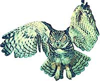
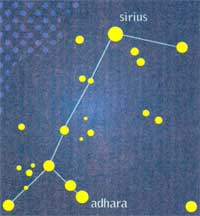
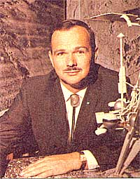
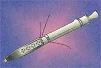

Seasons
A tribute to the Great Horned Owl.
Santa Claus is not the only one who flies through the skies on winter nights. A quite different airborne character is the Great Horned Owl. Although it is not quite the largest American owl (the Great Gray Owl is bigger, but common only in the Far North), the Great Horned Owl reigns supreme in the bird world. This mighty predator is a common permanent resident from the northern tree lines all the way to Tierra del Fuego. Its appearance is ferocious, with a big face, wide-apart ear tufts (its "horns"), and big yellow eyes topped by white lines of feathers in a V shape that create the impression of a scowl.
The Great Horned Owl's preferred prey is rabbit but it will attack a wide variety of animals up to the size of a skunk-even small house pets can be at risk. This owl is the size of the largest hawks, about 20 inches tall with a 55-inch wingspan. The only creatures of the air which are capable of harassing it are groups of crows, which seem to do so by raising a racket to drive it off.
Though fearsome to other animals, the great horned owl is a majestic creature to humans. Although the daytime eyesight of owls is said to be good, the Great Horned hunts at night and so is more often heard than seen. On stiff nights we can hear especially well its deep melodious hoots in a series of 3 to 8, interspersed with a longer "hoo-ooo" sound. This is one of the few animal sounds to be heard on winter nights. And owls are noted for breeding and laying their eggs in the cold, earlier than other birds. The Great Horned uses the nests of other large birds or squirrels and usually produces its eggs in February. The incubation period is about a month and the hatchlings don't leave the nest for another two months.
"Christmas has become too commercial"-we've heard this cry for decades, maybe made it ourselves. Some reformers have suggested that December 25 could be partly rescued from materialism by setting the time for gift-giving, or at least some gift-giving, on another day. This has already been done in other cultures, at other times.
An old tradition still acknowledged in Canada, Great Britain, and Australia is that of Boxing Day, December 26. This day is the feast of the first Christian martyr, St. Stephen, and its name is derived from the fact that on this day, alms boxes for the poor were distributed and servants took boxes of food and gifts from their employers home to their families.
A tradition which lingers in France and other countries is that of giving gifts on December 6, the birthday of St. Nicholas. Father Christmas, Pére Noël, Kris Kringle, Santa Claus: all, of course, are names for St. Nicholas. He was the Bishop of Myra in Asia Minor, and was supposed to have lived around A.D. 325. He was famous for his generosity and for mysteriously supplying food, clothing, even bags of gold for those in need. The old legends recount that St. Nicholas rides his white horse down from heaven at night on the eve of his birthday to visit children and "prepare their hearts for the coming of the Christ Child." The saint comes with a servant, Ruprecht, who carries the satchel of candies and toys for good children and of switches for bad children. It was apparently a Victorian custom to have children leave by the fireplace a beverage for Ruprecht and, in their shoes, hay or a carrot for St. Nicholas' horse. When the children awakened the next morning they would find not only a special gift for them but also a lebkuchen (a German honey cake) and candy.
As our daily almanac listings tell, the last month of 1997 and first of 1998 offer us views of both the brightest planet and the brightest star. The former is Venus, easily visible after sunset in both December and early January, then before dawn in the final days of January. The latter is Sirius, the Dog Star, which every year rises in the early evening in December and January and crosses the southeast sky to finally reach the southern sky in the middle of long, early-winter nights.
Sirius is the prime light of the constellation Canis Major the Big Dog (hence its name "Dog Star"). Sirius outshines even the stars of the brightest constellation, Orion, the Hunter, whom Canis Major follows. As a matter of fact, no other star in our sky comes even close to rivaling the radiance of Sirius except that daytime star we call the Sun.
The light of planets doesn't twinkle as much as stars. This twinkling, caused by our unsteady atmosphere's effects on objects like Sirius so distant they appear as points, is beautiful and can produce a flickering assortment of colors. The true color of Sirius is bluish-white but eddies in our atmosphere cause light of different wave lengths-different colors-to get alter nately reinforced and weakened.
Although Venus doesn't twinkle much, its yellow-white light is much brighter than even Sirius, much brighter than any star's or planet's. Venus is an eternally cloud-covered planet and the clouds reflect light into space very well. This, and the fact that Venus can come closer to Earth than any other planet, combine to produce its brilliance. Venus is closer to the Sun than Earth is and therefore is capable of showing phases when viewed through a telescope. It reaches peak brightness when it offers us the best combination of phase and closeness. This is what occurs in the first half of December 1997, and the results are tremendous. Venus at its brightest can actually cast shadows at night in very dark rural locations and can be found in broad daylight with the naked eye.
How can we compare the brightness of Venus with that of Sirius, or with that of any other celestial object? Astronomers use a system called "magnitude". In ancient times, scientists recognized six classes of brightness, six magnitudes from the brightest: "first magnitude" to the dimmest visible to the naked eye: "sixth magnitude."
Modern astronomers have had to refine the system in several ways. They've measured the brightness of stars photo-electrically accurately enough to determine magnitudes in decimal fractions for stars or planets. They've also set up a scale up to have a difference of 5 magnitudes represent one object being 100 times brighter than another. This made it necessary to extend the scale beyond first and sixth magnitude. The dimmest objects visible in binoculars and amateur telescopes are about 9th magnitude to 16th magnitude and the faintest galaxies and quasars electronically recorded by the Hubble Space Telescope are close to 30th magnitude. But a few stars and planets are brighter than even zero magnitude (remember, the lower the magnitude, the brighter the object). These have to be given negative magnitudes: Sirius shines at minus 1.5, Venus at its brightest at minus 4.7. The Full Moon is as bright as a star of magnitude minus 12. The Sun burns at a literally blinding magnitude minus 27.
Since late last year, the skywatchers of the world-astronomers and meteorologists both professional and amateur-have lost five of their greats. Two of these men passed away at advanced ages, but the other three were taken from us much too early in life.
Late in 1996, the astronomy world was saddened by the deaths of Clyde Tombaugh, the discoverer of Pluto, and Carl Sagan, the world's most famous scientist and science popularizer. Sagan's book and TV series Cosmos have been seen by hundreds of millions of people. Tombaugh was a country boy who initially couldn't afford college but built his own telescope and made such useful drawings of the planet Mars that he was given a job at Lowell Observatory in Arizona, where he discovered Pluto by a clever method of comparing sets of photographs.
Then in spring and early summer of 1997, as Comet Hale-Bopp departed, two of the world's greatest astronomers of comet-related studies died violently. One was Eugene Shoemaker, the leading authority on meteor and comet impacts. Among much else he proved that the mile wide Barringer Crater in Arizona was caused by a giant meteor, and he was a codiscoverer of Comet Shoemaker-Levy 9, whose pieces slammed into Jupiter in 1994. Gene Shoemaker was killed in an auto accident in Australia which almost also took the life of his wife Carolyn, the world's premier comet discoverer.
Jurgen H. Rabe, one of the world's leading comet scientists, was killed on June 18 during a severe storm when a tree fell on his car as he was driving near his home in Maryland.
Finally, and most close to "Almanac" readers, there was last spring's death of David M. Ludlum, "the dean of American weather historians." Ludlum was a lot more than that. He founded Weatherwise magazine almost five decades ago. In it, he wrote a sparkling monthly synopsis of America's weather until he was in his 80s. He will be missed by everyone who makes or uses an almanac.
1 Venus at highest after sunset as seen from around 40 degrees North latitude these next few weeks.
2 Venus-Mars-Moon at similar heights in southwest at dusk.
3 Moon directly above Venus at dusk.
4 Moon directly to right of Jupiter at dusk.
6 FIRST QUARTER MOON, 1:09 A.M. EST; St. Nicholas' Day (see column's text).
7 Pearl Harbor Day; earliest sunset (4:35 P.m.) at 40 degrees North latitude.
8 This night, the Moon occults (hides) Saturn as seen from all the contiguous U.S. west of the Mississippi except extreme Northwest.
9 Venus 2 1/2 degrees south-southeast of Neptune (telescope needed to see Neptune).
10 Wyoming Day.
11 Venus at "greatest brilliancy" (a technical term; actually, the planet is marginally brighter on December 14).
12 This night, the Moon occults (hides) the bright star Aldebaran as seen from everywhere in the U.S. save Alaska and peninsular Florida (binoculars probably necessary to see actual moment of hiding, telescope better; with naked eye enjoy trying to follow the star as close up to the brilliant Moon's edge as possible).
13 FULL MOON, 9:37 P.m. EST; Geminid meteors at their most numerous late this evening and through middle night but light of the Full Moon overwhelms view of all but the brightest of these "shooting stars"; St. Lucy's Day, once believed to be the shortest day of the year, and the occasion of beautiful candle-bearing customs in various European cultures. The poet John Donne wrote a poem about it, saying, "It is the year's midnight."
14 Venus reaches peak brightness, magnitude minus 4.7 (see text for discussion of "magnitude"); start of Halcyon Days, period of supposedly peaceful weather when the mythical bird called the halcyon nests upon the calm waters. This tradition sprang up in the Mediterranean, not America.
16 Mars 1 1/2 degrees south-southeast of Neptune (telescope needed to see Neptune).
17 Mercury at inferior conjunction with Sun (unviewable); Saturn resumes direct (that is, eastward) motion relative to the background stars. Look for Saturn as the brightest point of light in the due south soon after nightfall.
18 Sun enters constellation Sagittarius.
19 Saturnalia, ancient Roman festival; Moon very near bright star Regulus before dawn.
21 Winter solstice, 3:07 P.m. EST, start of winter in Northern Hemisphere (but summer in Southern Hemisphere): this is the shortest day of the year north of the equator and the one on which the Sun rises and sets farthest south; Sun enters astrological sign Capricornus.
22 Venus passes just over 1 degree north of Mars; spectacular conjunction in southwest at dusk (see these planets almost as close the day before and after).
24 Christmas Eve; first day of Chanukah.
25 Christmas.
26 Boxing Day in Canada, UK, and Australia (see column's text); Mars just over half a degree south-southeast of Uranus (telescope needed to see Uranus).
28 Very thin Moon visible not long before sunrise today, low in eastern sky; Halcyon Days end.
29 NEW MOON, 11:56 A.M. EST.
30 Very thin Moon far to lower right of Venus in southwest about 45 minutes after sunset.
31 New Year's Eve; first day of Ramadan, Muslim month of fasting, for second time in 1997 (January 10, 1997 was the previous) because the Muslim lunar year is shorter than the solar year; Moon forms impressive triangle with Venus and Mars, low in southwest at nightfall; Sirius, the brightest star, due south and highest as midnight brings in the new year.
1 New Year's Day; at dusk, Moon just to upper right of Jupiter in the southwest, with Mars and Venus well to their lower right.
2 On this day and next in 1913, an intense storm caused barometer readings in the Northeast as low as 28.2 inches (recorded in Canton, NY on January 3).
3 Peak of the Quadrantid meteor shower before dawn this morning. But there is a small possibility that they will be joined by other meteors also shooting out of the northeast: meteors from Comet Hale Bopp, which passed about 11 million miles outside this January's part of Earth's orbit back in early May.
4 Earth at perihelion, closest to the Sun in space: 91,402,600 miles. Because Earth's distance from the Sun doesn't vary too greatly during the year, a much more important factor in producing our weather is the tilt of the Earth (Earth's Northern Hemisphere is now pointed almost as much away from the Sun as possible, so our weather is cold).
5 FIRST QUARTER MOON, 9:19 A.m. EST; latest sunrise (7:22 A.m.) at 40 degrees North latitude; Twelfth Night.
6 Eastern Orthodox Christmas; Epiphany; Mercury at greatest elongation (23 degrees from the Sun) in the dawn sky; the first two weeks of this January offer a good chance to catch sight of this elusive innermost planet, shining best as a bright point of light in the southeast about 45 minutes before sunrise.
7 Possible smaller January Thaw sometime between now and January 10.
9 Venus sets about 1 hour after the Sun as seen from around 40 degrees North latitude.
11 Venus sets only about 45 minutes after the Sun as seen from 40 degrees North latitude; it will set too soon after the Sun and be lost from view to most skygazers in the next day or two.
12 FULL MOON, 12:25 P.M. EST; Mars within 5 degrees (one half the width of your fist held at arm's length) from Jupiter (now brightest point in southwest at nightfall) from now through January 29.
14 First day of the Roman year 2751 A.U.C. ( ab urbe condita, "from the city's founding," the city, of course, being Rome).
15 Martin Luther King's birth day (but is observed on January 19); Venus at inferior conjunction (passing due north of the Sun, on the near side of the Sun to us) and hence probably not visible.
17 Venus rises about 6:30 A.M., about 45 minutes before the Sun as seen from around 40 degrees North. Look for it very, very low in the east-southeast; this may be the first morning you see Venus as Morning Star.
19 Martin Luther King's Birthday (observed); Mars within 1 degree of Jupiter until January.
22 Sun enters constellation Capricornus; Sun enters astrological sign Aquarius.
20 LAST QUARTER MOON, 2:41 P.m. EST; very close Jupiter-Mars conjunction in southwest at dusk; Mars passes to the south, only about 1 / 5 th of a degree away (when sky is dark enough, binoculars show one of Jupiter's moons appearing not greatly closer to Jupiter than Mars is!): the January Thaw may occur sometime between now and January 26.
22 Venus rises about 6:15 A.M., about 45 minutes before the Sun as seen from around 40 degrees North latitude.
25 St. Paul's Day; on this night in 1837 a many-colored aurora (Northern Lights) as bright as a full Moon was witnessed in New England.
27 30 years ago on this date, the Apollo 1 fire killed three astronauts in test on launch pad.
28 NEW MOON, 1:02 A.m. EST; 12 years ago on this date, the Space Shuttle Challenger blew up, killing its crew of seven.
29 Very thin Moon near Mars at dusk, low in west (Jupiter shines to upper left).
30 A tornado occurred this day in 1954, in Nova Scotia!
31 The first U.S. satellite, Explorer I, launched on this day 40 years ago.
|
 PHOTO: G. RONALD AUSTING /PHOTO RESEARCHERS, INC. The constellation Canis Major, or ""Dog Star."" |
 ARCHIVE PHOTOS |
 |
|
 |
|
|